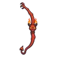
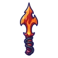
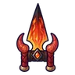
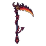
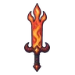
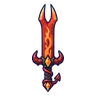

อิมป์เปลวไฟ
มอนธาตุไฟ Lv 84–99
เจอที่
| แมพ | โซน | Lv | ภูมิภาค |
|---|---|---|---|
| ปล่องภูเขาไฟ ชั้น 1 | 84–90 | แดนใต้สีแดง | |
| ปล่องภูเขาไฟ ชั้น 2 · ถ้ำมังกร | 90–95 | แดนใต้สีแดง | |
| ปล่องภูเขาไฟ ชั้น 2 · ถ้ำมังกร | 94–99 | แดนใต้สีแดง | |
| หอรากมืด (Dark Root) | เส้นเลือดถ่านไฟ | 33–42 | |
| หอดาวร่วง | ชั้นหอดาวร่วง | 89–99 |
ค่าสถานะตามเลเวล
| Lv | HP | ATK | DEF | MDEF | EXP | Job |
|---|---|---|---|---|---|---|
| 84 | 52,624 | 217–327 | 34 | 20 | 119 | 89 |
| 91 | 66,531 | 242–364 | 36 | 22 | 128 | 96 |
| 99 | 83,188 | 280–419 | 40 | 24 | 138 | 104 |
ตีด้วยธาตุไหนดี
แรงขึ้น: น้ำ ×1.5 พิษ ×1.25
เบาลง: ดิน ×0.5 ไฟ ×0.25
วัตถุดิบที่ดรอป
| ของ | โอกาส | |
|---|---|---|
| ส้อมจิ๋วของอิมป์ | 50% | 1 ชิ้น (15% ได้ 2) |
อุปกรณ์ที่ดรอป (10)
| ของ | โอกาส |
|---|---|
| 0.12% | |
| 0.12% | |
 ธนูอิมป์เปลวไฟ | 0.12% |
 มีดคู่หางอิมป์ | 0.12% |
 คาทาร์เขาอิมป์ | 0.12% |
 เคียวใหญ่อิมป์เปลวไฟ | 0.12% |
| 0.12% | |
 ดาบใหญ่เปลวอิมป์ | 0.06% |
| ปืนพกคู่อิมป์เปลวไฟ | 0.06% |
 ดาบส้อมอิมป์ | 0.06% |
สกิล
วาร์ป (Lv 25+) · วาร์ป (Lv 60+) · ปาตกใส่ (Lv 60+)